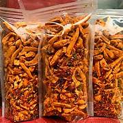

Kerupuk Basreng Pedas
Harga: Rp 10.000
Basreng adalah singkatan dari bakso goreng, makanan ringan yang terbuat dari bakso goreng yang renyah dan pedas.
Harga: Rp 10.000
Basreng adalah singkatan dari bakso goreng, makanan ringan yang terbuat dari bakso goreng yang renyah dan pedas.

Harga: Rp 15.000
Kerupuk kecil pedas adalah camilan ringan yang populer di Indonesia dengan rasa pedas yang menggoda.

Harga: Rp 10.000
Keripik kaca memiliki tekstur unik dan rasa pedas yang memikat, cocok untuk menemani berbagai acara.

Harga: Rp 10.000
Keripik usus adalah camilan gurih dari usus ayam yang digoreng renyah dan sangat populer di Indonesia.
Selamat datang di KUMANA SHOP! Kami adalah produsen dan penjual makanan ringan berkualitas yang siap memanjakan lidah Anda. Kami menghadirkan berbagai camilan gurih seperti basreng, keripik usus, keripik kaca, dan kerupuk kecil dengan bahan pilihan dan standar kebersihan tinggi.
Kami berkomitmen untuk menciptakan camilan yang lezat, renyah, dan terjangkau bagi semua kalangan. Nikmati camilan kami dalam berbagai momen spesial Anda!
Jika Anda memiliki pertanyaan atau ingin berkomunikasi dengan kami, silakan hubungi melalui: